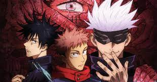
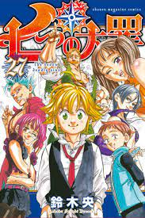
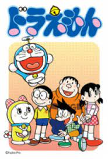
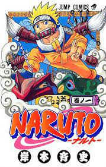
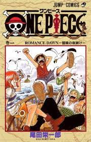
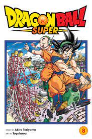

HOT

Vì một lý do kỳ lạ nào đó, Yuji Itadori, mặc dù với thể chất hoàn hảo nhưng anh lại đâm đầu vào tham gia CLB Huyền Bí. Tuy nhiên, họ đã sớm phát hiện ra là những câu chuyện huyền bí hoàn toàn có thật khi các thành viên trong CLB lần lượt bị tấn công! Trong khi đó, Megumi Fushiguro "bí ẩn" lại đang truy tìm một đối tượng bị nguyền rủa cấp đặc biệt và cuộc tìm kiếm này đã đưa nhóm bạn đến Itadori...
JUJUTSU NO KAISEN

Thất Hình Đại Tội đơn giản là một câu chuyện xoay quanh một nhóm anh hùng/ tội phạm với những câu chuyện riêng của từng người, những cuộc chiến nhiệm vụ đầy khó khăn và họ phải đương đầu để vượt qua. Được lấy cảm hứng từ bộ truyện tranh nổi tiếng của Suzuki Nakaba.
7 DEADLY SINS

Doraemon (Nhật: ドラえもん?) là một series manga của Nhật Bản do Fujiko Fujio sáng tác từ tháng 12 năm 1969 đến tháng 4 năm 1996 đăng trên tạp chí CoroCoro Comic của nhà xuất bản Shogakukan. Có tổng cộng 1345 chương truyện được tuyển chọn đóng gói đưa vào 45 tập tankōbon dưới ấn hiệu Tentōmushi Comics cũng do Shogakukan xuất bản; manga...
DORAEMON
ROMANTIC

"Naruto" là câu chuyện về Naruto Uzumaki, một ninja trẻ tìm kiếm sự công nhận từ mọi người và ước mơ trở thành Hokage, người lãnh đạo của làng mình...
NARUTO

One Piece là câu truyện kể về Luffy và các thuyền viên của mình. Khi còn nhỏ, Luffy ước mơ trở thành Vua Hải Tặc. Cuộc sống của cậu bé thay đổi khi cậu vô tình có được sức mạnh có thể co dãn như cao su, nhưng đổi lại, cậu không bao giờ có thể bơi được nữa...
ONE PIECE

Songoku là một cậu bé có cái đuôi khỉ được một ông lão sống trong rừng tìm thấy và đặt tên cho. Ông xem cậu như cháu ruột của mình mà nuôi nấng. Sau đó Songoku gặp một cô gái tên Bulma...
DRAGON BALL